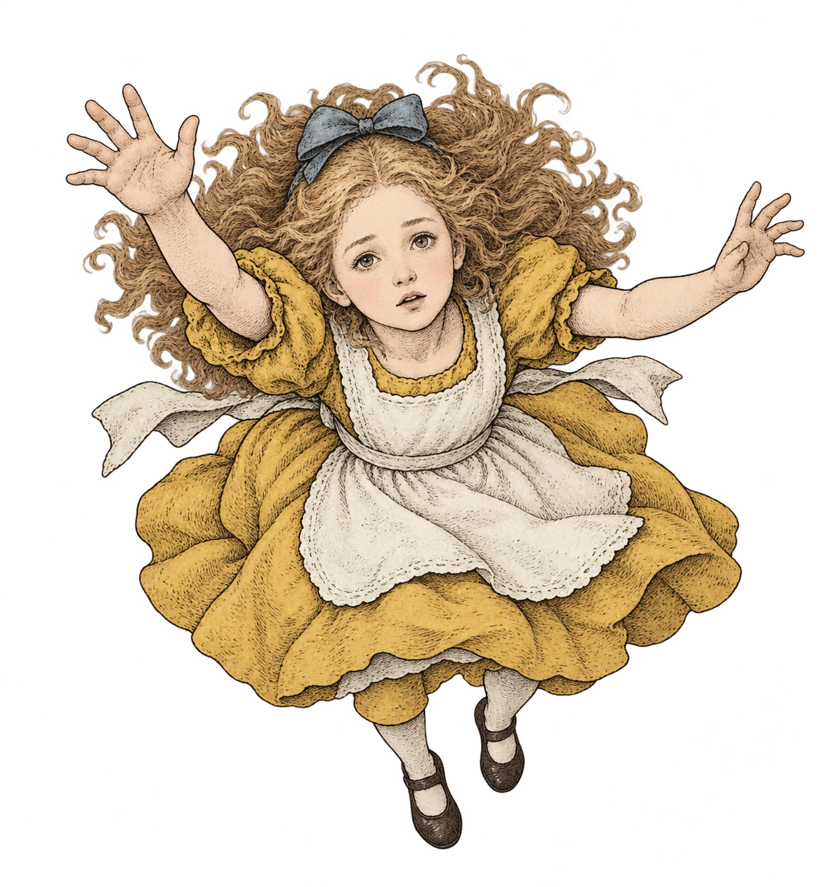
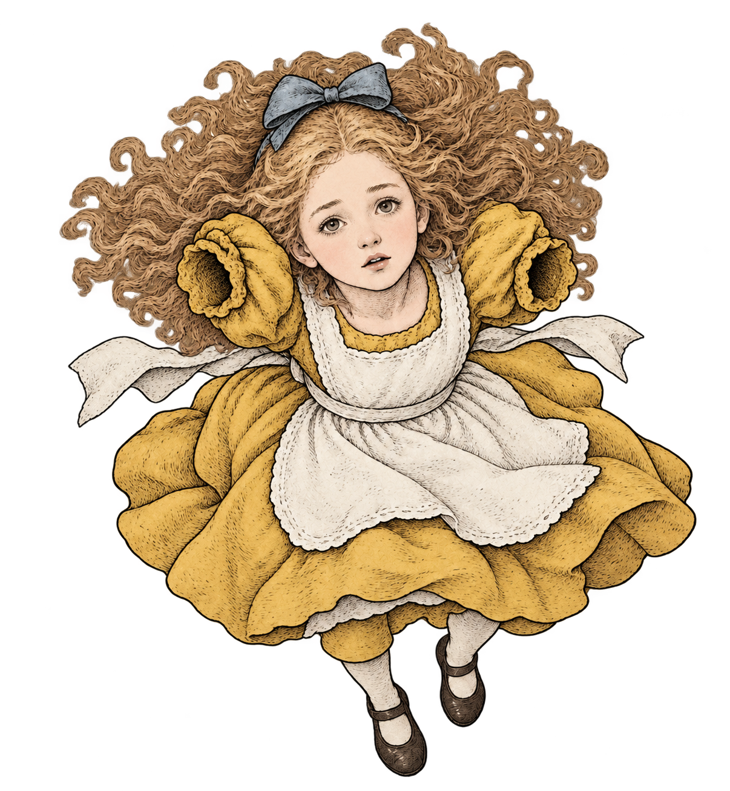
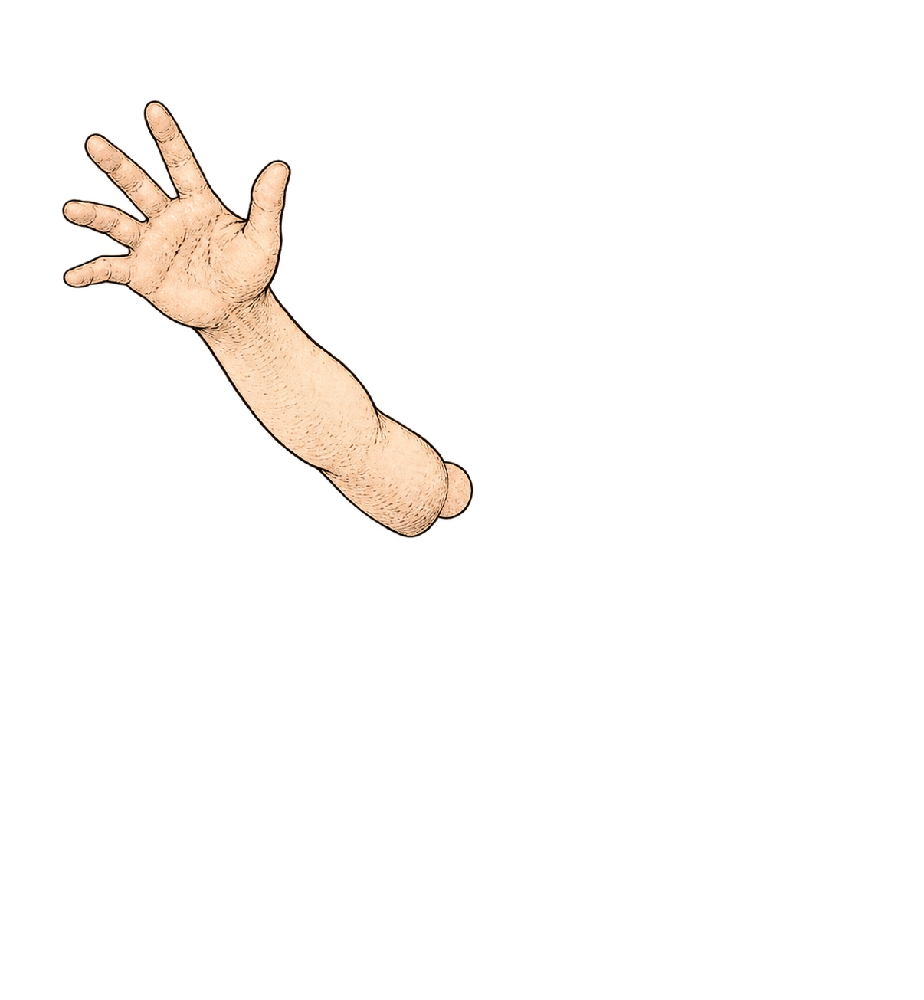
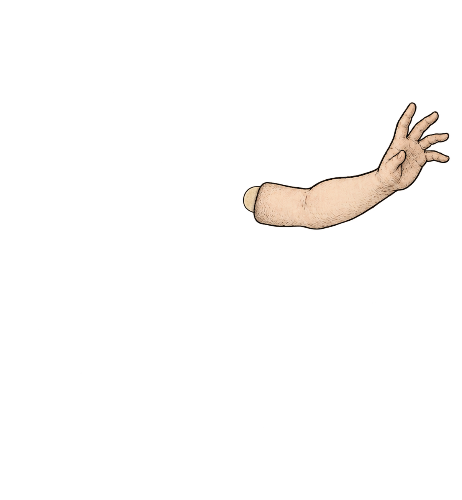

元の黄色候補

生成3枚を元座標で重ねた状態



未採用・静止比較です。分離生成は元の座標・大きさ・輪郭を厳密には保っていません。右の配置は CSS による仮置きであり、画像の修正や可動リグの完成ではありません。袖の接合、腕の太さ、指、顔と髪の変化を確認してください。瓶のアンカーや動きには接続していません。




リポジトリのルートでローカル静的サーバーを起動して開く資料です。アプリの既定画面・共有素材・本番には使いません。統合チェックポイント